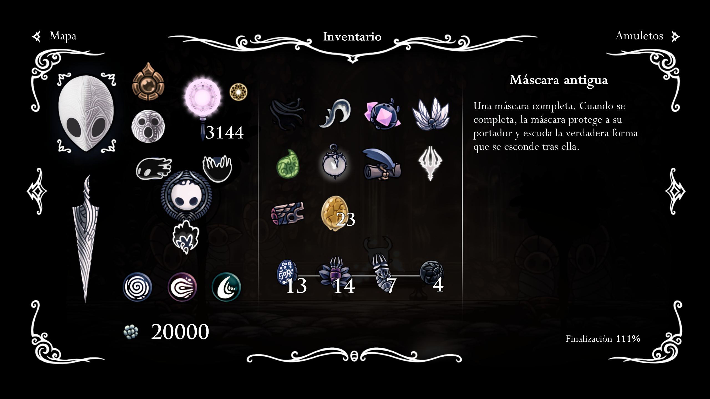
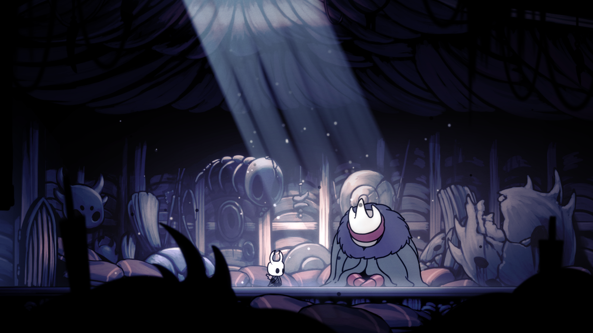
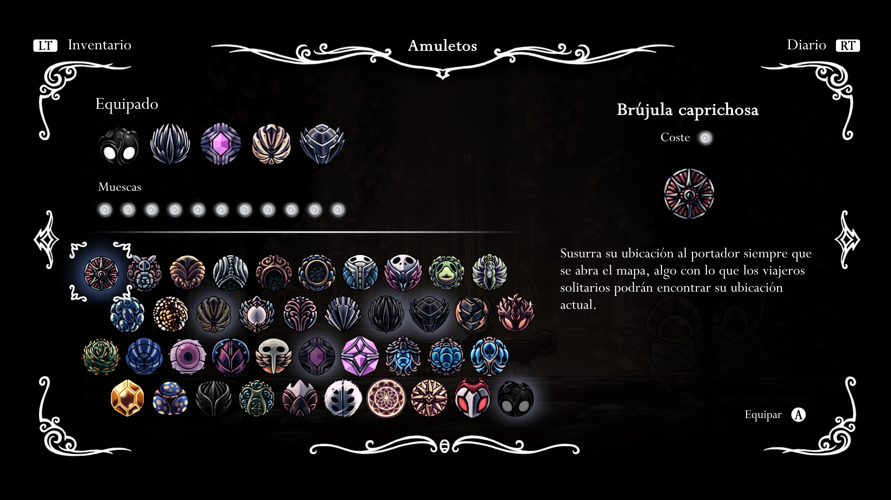
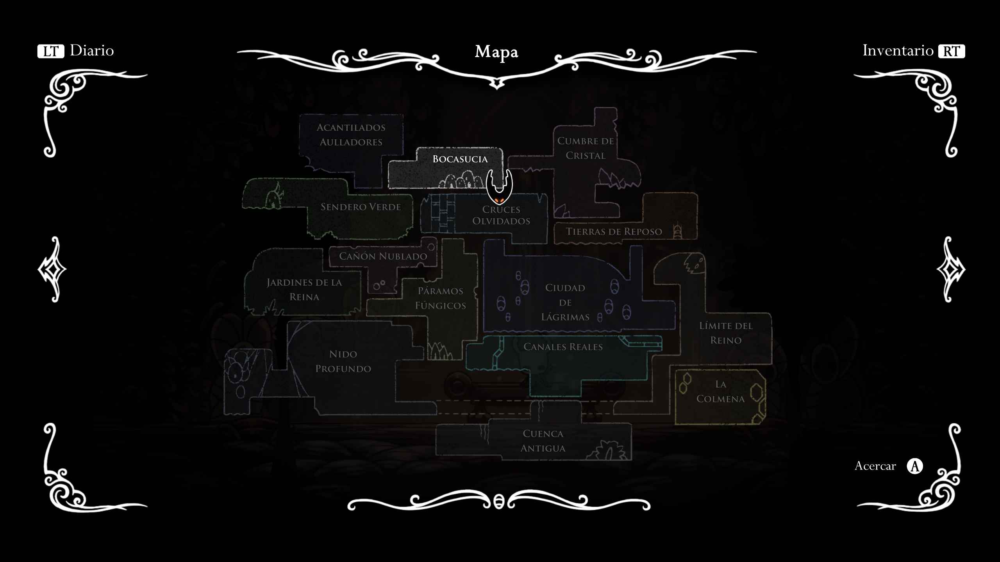

Empecemos desde lo mas básico, que es Hollow Knight:
Hollow Knight es un videojuego perteneciente al género metroidvania desarrollado y publicado por Team Cherry, en el cuál tomaremos control del caballero, un insecto, con capa de aspecto raido, un cuerpo de un negro plano y que porta un aguijón a modo de espada.
Ya de inicio después de la cinemática de presentación nos harán hacer el tutorial mientras avanzamos para salir de la cueva donde empezamos el juego y salir a Bocasucia, una antiguo pueblo de paso entre el mundo exterior y el reino de Hallowest, un reino formado por insectos, caido en decadencia despúes de que su antiguo gobernante, el Rey Pálido, desapareciera y con ello, sus habitantes parecieran estar contrayendo una extraña infección que hace que los ciudadanos pierdan su inteligencia y se pongan a atacar a los que aun se mantengan sin infectar.
El poblado de Bocasucia es el primer sitio donde te encuentras otros insectos inteligentes, aparte de ser un sitio por el cual estaremos pasando constantemente, mientras poco a poco se reunen mas NPCs misntras tu aventura progresa. En el nos encontraremos a un insecto anciano que nos instara a no explorar pero el juego trata de la busqueda de la historia de este reino, de explorar sus inmediaciones y luchar con los diferentes obstaculos que nos encontraremos todo para intentar salvar este reino de la completa perdición a la que esta destinado.
El caballero tiene diferentes gadgets para conllevar la exploracion y las diferentes batallas que aparecenran durante la aventura,
Aparte de pegar con el agujón el caballero tiene 3 magias que se pueden mejorar y 3 artes de agujón:
Las diferentes builds para pasarse el juego se hacen a través de los diferentes amuletos que nos encontramos durante la partida que se colocaran en las muescas de amuleto que hallamos conseguido:
En el mapa del juego podremos encontrar diferentes zonas de lo que antes era un prospero reino.
Con la compra del juego te vienen cuatro DLCs gratis que serian: